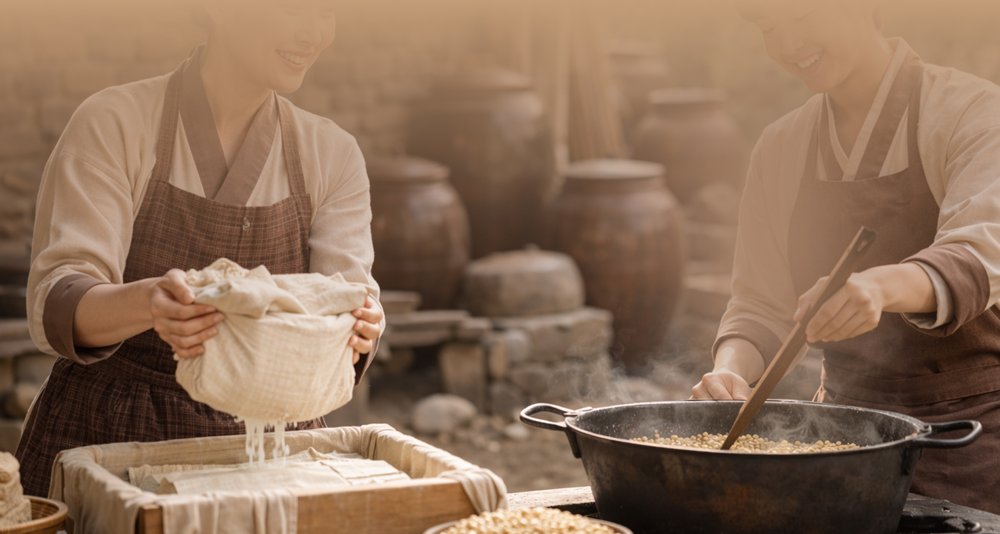
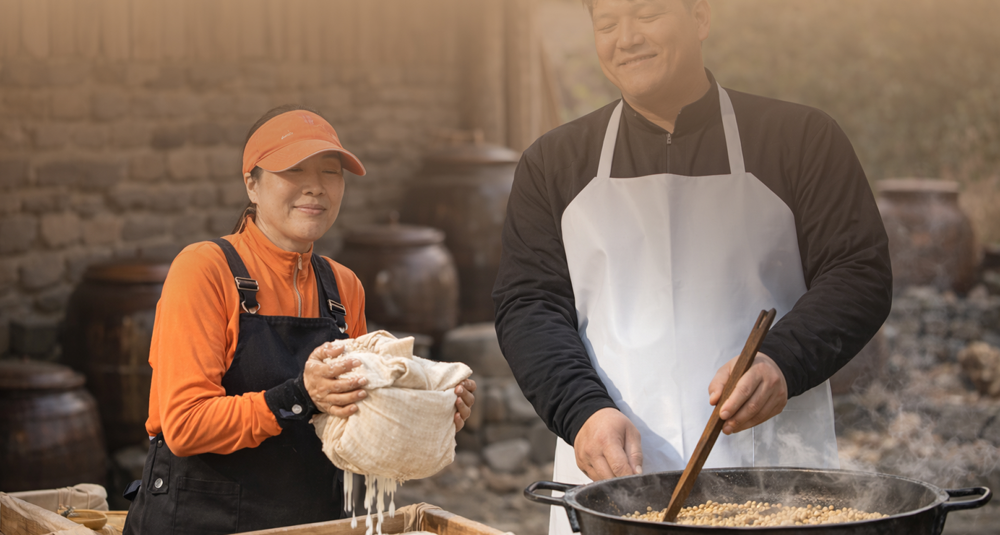
완
성
됩
니
다
성
됩
니
다
새
벽
의
정
성
으
로
벽
의
정
성
으
로
백
퍼
센
트
의
국
산
콩
과
퍼
센
트
의
국
산
콩
과
소
이
산
의
두
부
는
이
산
의
두
부
는
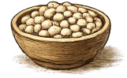


 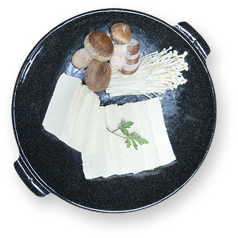
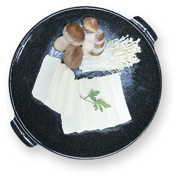


 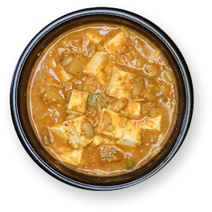
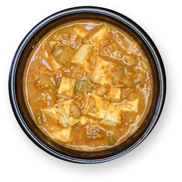


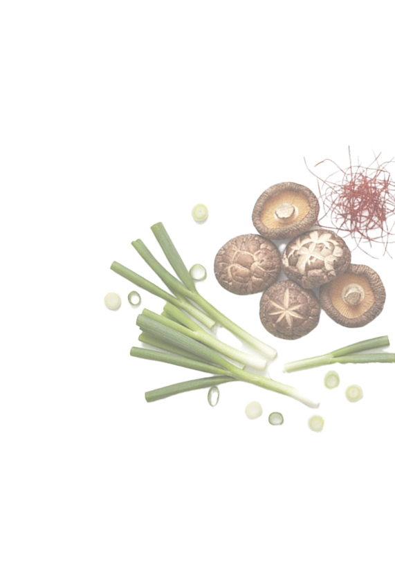
소이산 두부촌의 먹거리
매일 새벽, 엄마와 아들이 철원 땅의 귀한 100%
국산콩을 고르고 갈아냅니다. 기계의 빠름 대신
손끝의 정성을 택한 소이산 두부촌만의 고소함을
대접합니다
두부버섯전골
단백질이 풍부한 수제두부와
면역력 강화에 좋은 버섯이 만나
기력회복, 영양보충에 탁월합니다.
면역력 강화에 좋은 버섯이 만나
기력회복, 영양보충에 탁월합니다.
두부청국장
발효 과정에서 생기는 유익균이 장내
환경을 개선하고 면역력을 높여주는
대표적인 슬로우푸드입니다.
들깨비지탕
식이섬유가 풍부한 비지에 혈관건강을
돕는 들깨의 오메가3가 더해져 고소함과
건강을 동시에 잡았습니다.
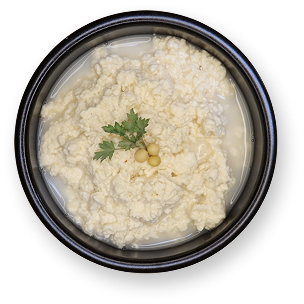
감자전
'땅속의 사과'라 불리는 감자의
비타민 C와 칼륨이 풍부하여 나트륨 배출과
피로 회복에 효과적입니다.
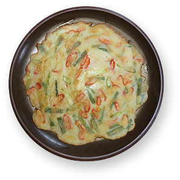
별미콩비지
콩의 영양소가 그대로 살아있는 비지는
포만감이 높아 다이어트와 장 운동 촉진에
도움을 줍니다.
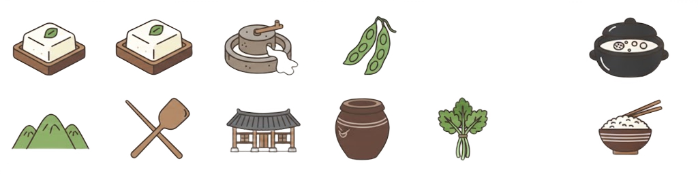

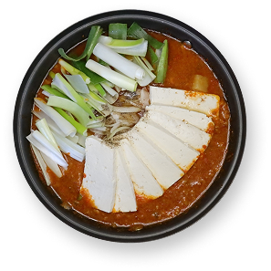
아리송화 두부버섯구이
항암 효과가 있는 버섯과 필수 아미노산이
풍부한 두부를 구워내어 최상의 영양
균형을 갖춘 별미입니다.
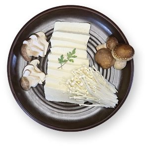
철원 땅의 정직함과 손맛의
정성,
소이산의 5가지 약속
철원의 깨끗한 자연에서 자란 국산콩만을 사용하고,
매일 새벽 직접 만드는 전통 방식으로 두부를
완성합니다.
눈에 보이지 않는 과정까지 정직하게 지키며, 믿고 드실 수 있는 건강한 한 끼를 약속드립니다.
눈에 보이지 않는 과정까지 정직하게 지키며, 믿고 드실 수 있는 건강한 한 끼를 약속드립니다.
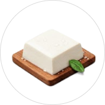
매일 새벽 빚는 수제 두부
가장 핵심 식재료인 철원산 콩을 직관적으로
보여주며, 신선하고 건강한 자연의 이미지를
전달합니다.
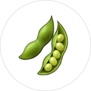
100% 철원 청정 국산콩
민통선 인근의 깨끗한 물과 토양이 기른 100%
철원산 콩만을 사용하여, 시중 두부와 차원이
다른 깊고 진한 고소함을 선사합니다.
자연을 담은 건강한 식재료
송화 버섯 구이와 산나물 등 소이산 두부촌만이
가진 청정 식재료의 다양성을 표현합니다.
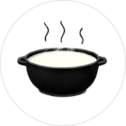
속이 편안한 슬로우 푸드
식이섬유가 풍부한 보리와 정성으로 숙성시킨
발효 음식(청국장 등)의 깊은 맛과 건강함을
상징합니다.
정갈하고 따뜻한 시골 인심
방문객에게 제공하는 최고의 서비스와 넉넉한
마음씨, 그리고 믿고 먹을 수 있는
'추천' 맛집임을 나타냅니다.
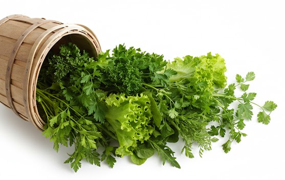

Daily Morning Routine of
Soisan Dubuchon
Soisan Dubuchon
소이산두부촌의
매일 새벽일과
매일 새벽일과
소이산 두부촌
으로 안내하겠습니다
매일 새벽, 엄마와 아들이 철원 땅의 귀한 100%
국산콩을 고르고 갈아냅니다.
기계의 빠름 대신 손끝의 정성을 택한 소이산
두부촌만의 고소함을 대접합니다
대형주차장완비
매일 새벽 철원에서 생산된 깨끗하고
질좋은 국산콩으로 직접 만들어내는
고소하고 맛있는 두부와
국산만을 고집하는 사장님의 손맛으로 만들어낸 반찬과 음식들로 항상 변함없는 맛으로 보답하는
소이산두부촌 입니다.
국산만을 고집하는 사장님의 손맛으로 만들어낸 반찬과 음식들로 항상 변함없는 맛으로 보답하는
소이산두부촌 입니다.
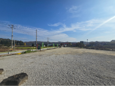
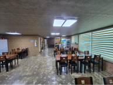
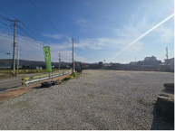
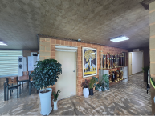
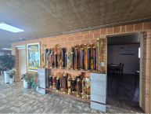
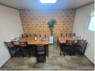
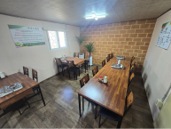
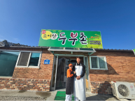
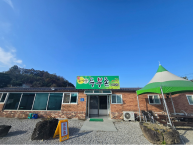
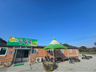
예약문의 전화
033 - 455 - 5698
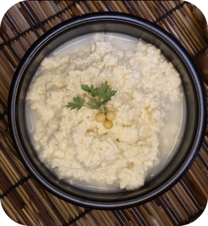
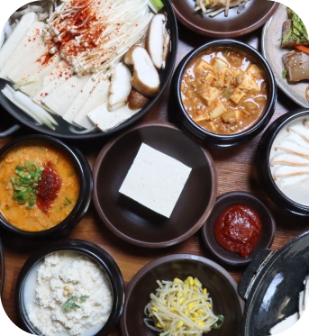
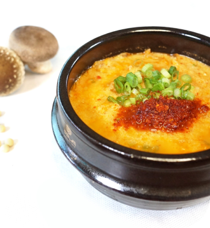
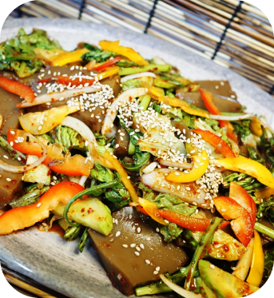
예약 및 방문 안내
소이산 두부촌의 정성 가득한 한 상을 미리 준비해
드립니다.
전화 예약
- 예약 문의: 033-000-0000 (매장 번호 입력)
- 운영 시간: 매일 10:00 ~ 19:00
- 브레이크 타임: 15:00 ~ 17:00
- 단체(8인 이상) 및 주말 방문 시 미리 전화 주시면 더욱 원활한 이용이 가능합니다.
찾아오시는 길
- 주소: 강원도 철원군 철원읍 소이산로 000 (소이산 두부촌)
- 주차 안내: 매장 앞 대형 주차장 완비 (대형 버스 및 단체 주차 가능)
방문 전 확인해주세요!
- 당일 제조: 저희는 매일 새벽 직접 두부를 빚습니다. 재료 소진 시 조기 마감될 수 있는 점 양해 부탁드립니다.
- 단체 환영: 넓은 홀과 넉넉한 주차 공간이 마련되어 있어 단체 모임에 최적화되어 있습니다.
약도
소이산 두부촌으로 오세요